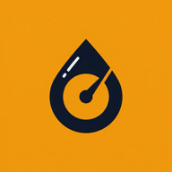

Sorular, hatalar ve geri bildirim
odabasi.developer@gmail.com adresine yaz, birkaç gün içinde cevap alırsın.
Bir sorunu tekrar üretebilmemiz için cihaz modelini, iOS ya da Android sürümünü ve olay olduğunda ne yaptığını da yazarsan çok iyi olur.
Tüketim iki full depo arasında ölçülüyor. İlk full depodan sonra ikinci bir full depo kaydettiğinde ortalama ortaya çıkar. Dolum yaparken depoyu ağzına kadar doldurduysan Depo full seçeneğini açmayı unutma.
Hayır. Yarım dolumların litresi bir sonraki full depoya kadar toplanır ve tüketim o aralığın tamamı üzerinden hesaplanır. İlk full depodan önceki dolumlar tüketime katılmaz.
Litre, kilometrenin önceki dolumdan küçük ya da sonraki dolumdan büyük olduğunu fark ederse uyarır. Kaydı geçmişten açıp düzeltebilirsin.
Km başı yakıt maliyeti, tüketimle aynı şekilde full depolar arasında ölçülür: o aralıkta ödenen yakıt tutarı, gidilen kilometreye bölünür. Km başı toplam maliyet buna masrafları da ekler; masrafların toplamı, kayıtlarındaki en düşük ve en yüksek kilometre arasındaki mesafeye bölünür.
Evet, Ayarlar › Para birimi. TRY, EUR, USD ve GBP var. Bu yalnızca gösterilen simgeyi değiştirir; kayıtlı tutarlar çevrilmez.
Yeni dolum ekranında Fişi tara'ya bas, fişin fotoğrafını çek ya da galeriden seç. Litre litre ve tutarı bulup forma yazar; kaydetmeden önce kontrol et.
Fişi düz bir yüzeye koy, iyi ışıkta ve yazılar net çıkacak kadar yakından çek. Buruşuk ya da soluk fişlerde okuma başarısız olabilir; o zaman sayıları elle gir.
Hayır. Yazı tanıma telefonun içinde yapılıyor ve fotoğraf kayıtlarına eklenmiyor. Ayrıntılar gizlilik politikasında.
Evet. Ana ekranda aracın adına dokun ya da Ayarlar › Araçlar'a git, oradan Araç ekle. Yeni kayıtlar seçili araca yazılır.
O araca ait bütün dolum ve masraf kayıtları da silinir. En az bir araç kalması gerektiği için son aracı silemezsin.
Silme kalıcıdır. Kayıtlar yalnızca telefonunda durduğu için bizim geri getirmemiz mümkün değil.
Hayır. Litre'de hesap yok; kayıtların yalnızca telefonunda saklanıyor.
iOS'ta kayıtlar iCloud veya bilgisayar yedeğine dahil olduğu için yedekten kurulan yeni iPhone'a gelir. Android'de uygulamanın yedeklemesi kapalı, bu yüzden kayıtlar yeni telefona taşınmaz. Dışa aktarma şu an yok.
Ayarlar › Gizlilik › Kullanım istatistiklerini paylaş. Kapattığında anonim istatistikler ve çökme raporları gönderilmez. Tutarlar, kilometreler ve notlar zaten hiç gönderilmiyor.
Litre ücretsiz ve masrafını ana ekranda ve geçmişte gösterilen banner reklamlarla karşılıyor. Kayıt formlarında reklam yok. Reklamları Google AdMob sunuyor.
iOS'ta Ayarlar › Gizlilik ve Güvenlik › İzleme, Android'de Ayarlar › Google › Reklamlar. Ayrıntılar gizlilik politikasında.
Ayarlar'dan Türkçe ile İngilizce arasında geçebilir, temayı Açık, Koyu ya da Cihaza uy olarak ayarlayabilirsin.